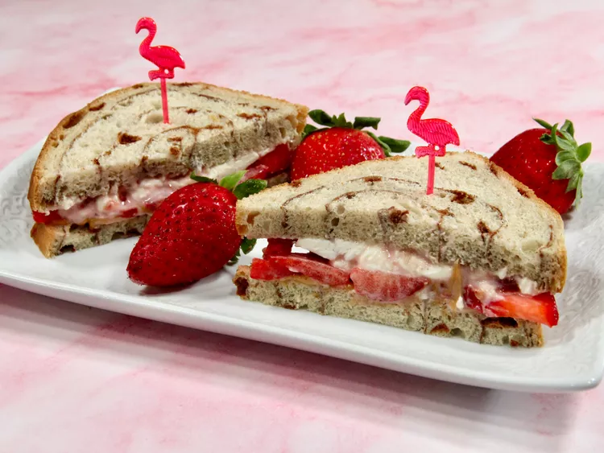

Home(All Recipes)
Strawberry Sandwich

Description
This cream cheese and peanut butter strawberry sandwich takes a classic combination—strawberries and cream cheese—and adds a sensational flavor layer: peanut butter.
Ingredients
- 2 tablespoons cream cheese, softened
- 1 teaspoon strawberry preserves
- 1 tablespoon peanut butter
- 3 large strawberries, thinly sliced, or to taste
- 2 slices cinnamon swirl bread
Steps
- Step 1:
- Mix cream cheese and strawberry preserves in a small bowl until well combined.
- Step 2:
- Place 2 slices of bread on a flat surface. Spread peanut butter on one slice and cream cheese mixture on the other.
- Step 3:
- Assemble as follows: peanut butter slice on the bottom, top with sliced strawberries, and place cream cheese slice on top to form a sandwich. Slice in half and serve.